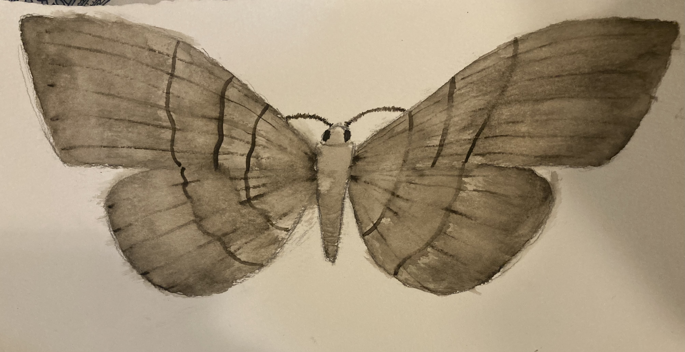
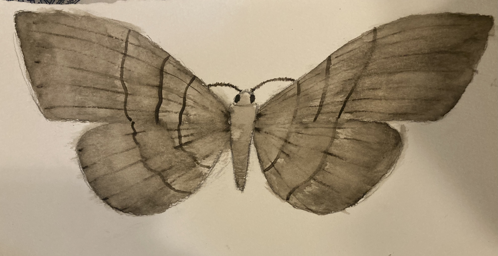

I am passionate about connecting young learners to the environment through inquiry-based education, hands-on experiences, and cross-disciplinary approaches. Below are some of the projects and programs I’ve led or contributed to.
Environmental Education Program (2025–Present)
- Designed and led weekly environmental activities for grades Pre-K to 8
- Integrated science, art, and outdoor exploration into core learning
- Planned school-wide sustainability initiatives and field trips
Carolina Wildlife Shelter Volunteer
- Helped care for injured and orphaned native species
- Educated the public on local wildlife conservation
Scientific Illustration – Eric LoPresti Lab
Below are selected watercolor illustrations of native moths created for use in outreach and ecological education. In order of appearance they are; Paonias excaecata, Tornos cinctarius, Nemoria lixaria, Lacosoma chiridota, Anisota stigma, Darapsa myron, Apatelodes torrefacta, Digrammia eremiata, Lophosis Labeculata, and Epimecis hortaria
 

TAKIN Citizen Science Program
- Participated in nature observation and data collection using iNaturalist
- Engaged with youth in national wildlife education events